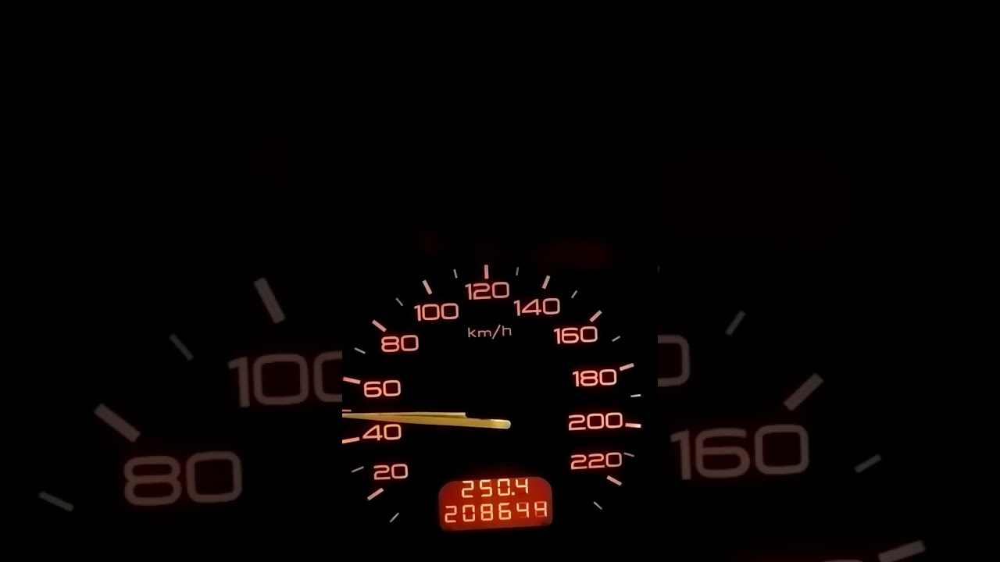

Россияне стали больше экономить на бензине - ПРАЙМ, 12.09.2020
 Россия Сегодня РИА Новости ИноСМИ Р-Спорт РИА Недвижимость РИА Рейтинг 16:56 Воскресенье 27 Сентября Агентство экономической информации ПРАЙМ Агентство экономической информации ПРАЙМ Новости Экономика Рынки Энергетика Бизнес Технологии Финансы Интервью Новости Экономика Финансы Рынки Энергетика Технологии Интервью Статьи Мнения аналитиков Календарь событий Пресс-релизы
Подписчикам
Доступ к профессиональным продуктам
и сервисам для клиентов агентства.
Авто
Эксперты выяснили, какие автомобили быстрее всего теряют в цене
Торги
Индекс Мосбиржи снизится, а рубль подорожает по итогам следующей недели
Нефть
Цены на нефть сползают вниз из-за рисков для экономики
Пандемия коронавируса
COVID и море: гуманитарная катастрофа мирового торгового флота
Банки
Банки сохраняют удаленку для целого ряда сотрудников
Налоги
Британский миллиардер нашел способ бегства от налогов
2020-09-12T03:30:00+03:00 2020-09-12T09:43:52+03:00 https://1prime.ru/energy/20200912/832018327.html https://1prime.ru/images/82939/49/829394920.jpg Агентство экономической информации ПРАЙМ https://1prime.ru/i/logo/logo_subscription.png Агентство экономической информации ПРАЙМ https://1prime.ru/i/logo/logo_subscription.png Энергетика 12 Сентября 2020, 03:30 Бизнес Транспорт НовостиРоссияне стали больше экономить на бензине
Заправка автомобиля на АЗС
© РИА Новости. Евгений Одиноков
Читать 1prime.ru вМОСКВА, 12 сен ПРАЙМ. Бум внутреннего туризма в России из-за закрытых границ спровоцировал этим летом рост спроса на бензин, показало исследование банка "Русский стандарт", имеющееся в распоряжении агентства "Прайм". Аналитики выяснили, что необходимость много ездить на авто заставила россиян задуматься об экономии: марка бензина Аи-95 в этом году уступила лидерство в топе покупок более доступной Аи-92.
Аналитики изучили наполнение кассовых чеков покупок по картам в мобильном банке за лето 2020 года и сравнили полученные результаты с аналогичным периодом прошлого года.
"Летом 2020 года россияне особенно активно путешествовали на собственных авто внутри страны из-за закрытия границ. Как результат – выросли их покупки бензина. Так, согласно статистике банка, бензин АИ92 покупали на 60% чаще, чем в прошлом году, а количество покупок Аи-95 практически не изменилось. Причем, летом 2019 года АИ95 опережал в статистике количества покупок Аи-92, а летом 2020 они поменялись местами", подсчитали в кредитной организации.
То, что более дешевая марка бензина в России вышла на первое место по числу покупок, отражает экономические тенденции, считает руководитель аналитического департамента AMarkets Артем Деев. Он пояснил, что на фоне пандемии коронавируса многие россияне стараются разными способами снизить расходы на топливо. Определенное влияние оказал и тот факт, что в России постепенно сокращаются покупки новых автомобилей иностранного производства, отметил эксперт.
"Россияне стали больше приобретать машины отечественного производства, которые потребляют Аи-92 – для водителей это важно, так как изначально снижает стоимость эксплуатации автомобиля, и весьма существенно. В текущем году самыми популярными моделями стали "Лада Гранта" и "Лада Веста", которые соответственно занимают первое и второе места в России по продажам. Кроме того, Аи-92 потребляют Kia Rio и Hyundai Creta – эти модели автомобилей занимают третье и четвертое места по популярности среди россиян", сказал Деев.
194 Теги: экономия траты бензин РОССИЯ Facebook Twitter Вконтакте Распечататьhttps://1prime.ru/energy/20200912/832018327.html
Подписывайтесь на канал ПРАЙМ в «Яндекс.Дзен» Подписаться Показать ещеХотите получать самые важные новости экономики? Подпишитесь на обновления ПРАЙМ в вашем браузере.
Напомнить позже Подписаться Статьи Мнения аналитиков Календарь событий Пресс-релизы Регионы Продукты ПРАЙМ для бизнесаБИР - Аналитик
Мощный инструмент для анализа компаний и организаций, отраслей, рынков и территорий России
Информационные ленты
Специализированные ленты новостей по золотодобывающей отрасли, металлургии, транспорту и сельскому хозяйству.
Торговый терминал
Автоматизированная электронная система управления финансовыми потоками и активами
Раскрытие информации
ПРАЙМ — агентство, уполномоченное финансовой службой Банка России на раскрытие информации эмитентами ценных бумаг.
Инфотерминал
Весь комплекс рыночной информации в реальном времени в одной системе.
Вестник золотопромышленника
Информационно-аналитический интернет-ресурс для профессионалов золотодобывающей отрасли.
БИР – Эмитент
Система комплексного анализа всех российских эмитентов.
Издания Банка России
Агентство ПРАЙМ является издателем и распространителем «Вестника Банка России» и «Статистического бюллетеня Банка России».
Новостные потоки Доу Джонс
Круглосуточные переводные ленты новостей по международному валютному, фондовому и товарно-сырьевому рынкам.
PRIME in English
Новостные ленты, периодические издания и бюллетени для англоязычных пользователей.
PR поддержка вашего бизнеса в мировых СМИ
Публикация пресс-релизов через крупнейшую международную сеть PR Newswire.
Справки по иностранным компаниям
Проверка надежности зарубежных бизнес-партнеров.
Продукты прайм для бизнесаБИР - Аналитик
Мощный инструмент для анализа компаний и организаций, отраслей, рынков и территорий России
Информационные ленты
Специализированные ленты новостей по золотодобывающей отрасли, металлургии, транспорту и сельскому хозяйству
Раскрытие информации
ПРАЙМ — агентство, уполномоченное финансовой службой Банка России на раскрытие информации эмитентами ценных бумаг.
Торговый терминал
Автоматизированная электронная система управления финансовыми потоками и активами.
Инфотерминал
Весь комплекс рыночной информации в реальном времени в одной системе.
Вестник золотопромышленника
Информационно-аналитический интернет-ресурс для профессионалов золотодобывающей отрасли.
БИР – Эмитент
Система комплексного анализа всех российских эмитентов.
Издания банка России
Агентство ПРАЙМ является издателем и распространителем «Вестника Банка России» и «Статистического бюллетеня Банка России».
Новостные потоки Доу Джонс
Круглосуточные переводные ленты новостей по международному валютному, фондовому и товарно-сырьевому рынкам.
PRIME in English
Новостные ленты, периодические издания и бюллетени для англоязычных пользователей.
PR поддержка вашего бизнеса в мировых СМИ
Публикация пресс-релизов через крупнейшую международную сеть PR Newswire.
Справки по иностранным компаниям
Проверка надежности зарубежных бизнес-партнеров.
Читайте ПРАЙМ в: Facebook Vkontakte Twitter Telegram Я.Дзен Яндекс.Дзен© 1996 – 2020 АО «АЭИ «ПРАЙМ»
Настоящий ресурс может содержать материалы 18+.
Правила цитирования и использования материалов.Фотоматериалы предоставлены агентством «РИА Новости» и AP
Свидетельство о регистрации СМИ: Эл №ФС77-53773 от 17.04.2013
Об Агентстве
Контактная информация
Тел. +7 (495) 645-37-00
Дирекция продаж: +7 (495) 968-62-68
8-800-333-50-50 (для звонков из РФ бесплатно)
Обратная связь
119021 г. Москва Зубовский бульвар, 4
Лауреат премии рунета 2016Партнер Рамблера
Правовая поддержка - компания КонсультантПлюс